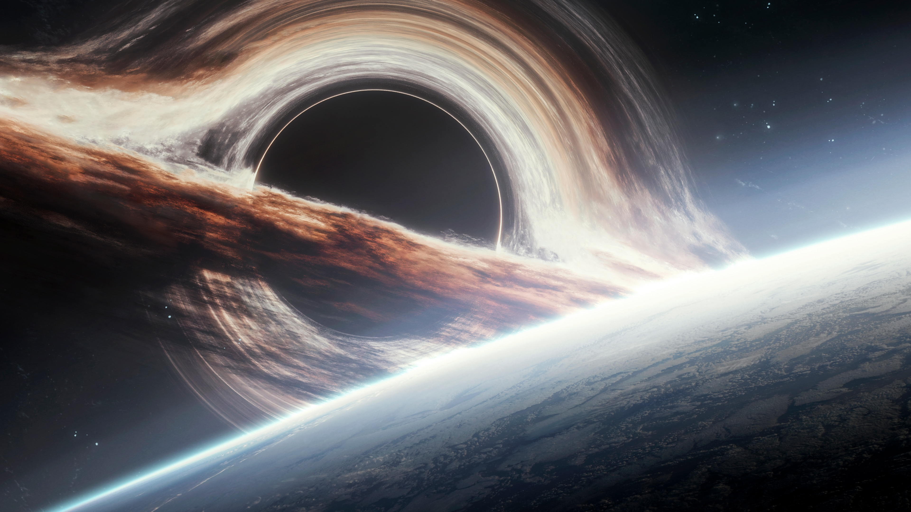
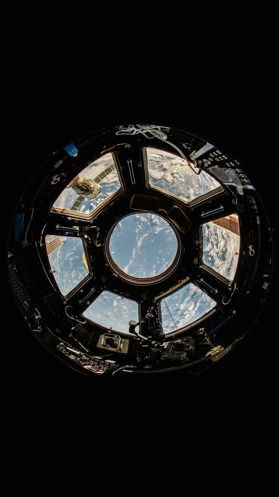

Uma Viagem pelos mundos!

(Creditos a imagem: Vadim Sadovski - We are still pioneers 3d)Buracos negros são regiões do espaço onde a gravidade é tão intensa que nada consegue escapar de dentro de uma fronteira chamada horizonte de eventos, nem mesmo a luz. Eles são formados quando uma grande quantidade de matéria fica concentrada em uma região extremamente pequena, criando uma força gravitacional extraordinária.
Uma das formas mais conhecidas de formação de buracos negros acontece quando estrelas muito massivas chegam ao final de suas vidas e sofrem um colapso gravitacional. Quando o combustível nuclear acaba, a pressão que sustentava a estrela diminui, permitindo que a gravidade provoque seu colapso. Uma característica importante dos buracos negros é o horizonte de eventos, que representa o limite a partir do qual não existe possibilidade de retorno.
Ao redor de alguns buracos negros existe um disco de acreção, formado por gás e poeira que giram em alta velocidade e podem atingir temperaturas extremamente elevadas, emitindo grandes quantidades de radiação. Existem diferentes tipos de buracos negros, classificados principalmente por sua massa. Os buracos negros estelares possuem massas comparáveis às de estrelas, enquanto os supermassivos podem ter milhões ou até bilhões de vezes a massa do Sol. Esses últimos são encontrados nos centros de muitas galáxias, incluindo a Via Láctea, onde está localizado Sagittarius A*. Apesar de não emitirem luz diretamente, os buracos negros podem ser estudados observando seus efeitos sobre a matéria e a luz ao redor deles.
Exoplanetas são planetas que orbitam estrelas diferentes do Sol, ou seja, estão localizados fora do nosso Sistema Solar. A descoberta desses mundos transformou a astronomia, pois mostrou que a existência de sistemas planetários é muito mais comum do que se imaginava. Esses planetas podem apresentar características extremamente diferentes das encontradas na Terra, incluindo tamanhos, temperaturas, atmosferas e composições variadas.
A identificação de exoplanetas é um grande desafio, pois eles geralmente estão muito distantes e são difíceis de observar diretamente. Por isso, os astrônomos utilizam diferentes métodos de detecção. Um dos mais conhecidos é o método do trânsito, que identifica pequenas reduções no brilho de uma estrela quando um planeta passa à sua frente. Outro é o método da velocidade radial, que observa pequenas alterações no movimento da estrela causadas pela influência gravitacional do planeta.
Um conceito importante nesse estudo é a zona habitável, uma região ao redor de uma estrela onde as condições de temperatura podem permitir a existência de água líquida na superfície de um planeta, dependendo de sua atmosfera e de outras características. Entretanto, estar nessa região não significa necessariamente possuir vida. A existência de organismos fora da Terra ainda não foi confirmada, mas a descoberta de novos exoplanetas continua ampliando nossa compreensão sobre a possibilidade de outros mundos habitáveis.

(Creditos a imagem: fotografia Nasa-2013)